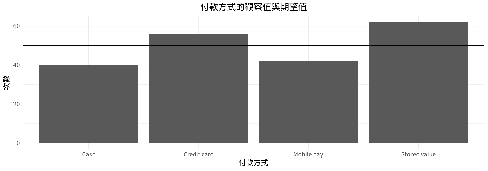

[1] 6.88第11章：其他卡方檢定
實踐大學
2026-10-08
第11章運用卡方分配檢定關於次數分配的假設，而不是關於平均數、比例或變異數的假設。
| 節次 | 主題 |
|---|---|
| 11-1 | 卡方適合度檢定；觀察次數與期望次數；\text{d.f.} = k - 1；程序表；常態性檢定 |
| 11-2 | 列聯表；卡方獨立性檢定；期望值的算法；\text{d.f.} = (R-1)(C-1)；比例同質性檢定；Yates 校正 |
讀完本章後，你應該能夠
第7章與第8章用卡方分配求單一變異數或標準差的信賴區間，並檢定關於單一變異數或標準差的假設。卡方分配也可以用來檢定關於次數分配的問題。
這三種檢定都以 \chi^2 = \sum \dfrac{(O-E)^2}{E} 為基礎，而且都是右尾檢定。
卡方統計量除了用來檢定單一變異數之外，還可以用來判斷一個次數分配是否符合某種特定型態。例如：零售業者想知道消費者是否偏好某種付款方式；物流規劃人員想知道包裹是否在某幾天特別常被取件；客服中心想知道某些時段的來電是否特別多。
卡方分配的特性
卡方適合度檢定
卡方適合度檢定用來檢定「觀察到的次數分配符合某個給定的期望次數分配」這項主張。
假設你想知道某超商通路的顧客在四種付款方式上是否平均分布。隨機抽出 200 筆交易，得到下列分配（模擬資料）。
| 付款方式 | 現金 | 儲值卡 | 行動支付 | 信用卡 |
|---|---|---|---|---|
| 觀察次數 | 40 | 62 | 42 | 56 |
觀察次數與期望次數
各付款方式的次數是從樣本得來的，這些實際發生的次數稱為觀察次數；以計算方式求得（假設沒有偏好時應該出現）的次數稱為期望次數。
計算期望次數的兩個規則
若各類別沒有差異，每一種付款方式應有 200 \div 4 = 50 筆交易。
| 次數 | 現金 | 儲值卡 | 行動支付 | 信用卡 |
|---|---|---|---|---|
| 觀察次數 | 40 | 62 | 42 | 56 |
| 期望次數 | 50 | 50 | 50 | 50 |
觀察次數幾乎一定會因抽樣誤差而與期望次數不同。這些差異是顯著的還是純屬機遇？H_0 寫成「沒有差異」：
檢定統計量與自由度
\chi^2 = \sum \frac{(O - E)^2}{E}
自由度等於類別數減 1，其中
當觀察值與期望值完全一致時 \chi^2 = 0；\chi^2 也永遠不會是負數。由於「H_0：適合良好」與「H_1：適合不佳」分別對應到小的與大的 \chi^2，本檢定一律是右尾檢定。
付款方式的例子有四個類別，所以 \text{d.f.} = 4 - 1 = 3：前三個類別的交易筆數可以自由變動，但為了讓總和等於 200，最後一個類別的筆數就被固定了。
卡方適合度檢定的假設條件
注意
統計學家要求期望次數至少為 5，是因為卡方分配是連續的，而適合度檢定的資料是離散的。只有當每一組的期望值至少為 5 時，連續分配才是良好的近似。若某一組的期望次數小於 5，可以把該組與其他組合併，使期望次數達到 5 以上。
五個步驟
步驟 1. 寫出假設並指出主張。
步驟 2. 由表 A-6 求臨界值。本檢定一律為右尾。
步驟 3. 計算檢定統計量——把各個 \dfrac{(O-E)^2}{E} 值加總。
步驟 4. 做出決策。
步驟 5. 總結結果。
在 R 中，臨界值為 qchisq(1 - alpha, df)，P 值為 1 - pchisq(chi_sq, df)。
超商通路的付款方式
是否有足夠證據拒絕「四種付款方式被使用的次數相同」這項主張？取 \alpha = 0.05（模擬資料）。
| 次數 | 現金 | 儲值卡 | 行動支付 | 信用卡 |
|---|---|---|---|---|
| 觀察次數 | 40 | 62 | 42 | 56 |
解題
步驟 1. 寫出假設並指出主張。
H_0：各種付款方式的交易筆數沒有差異（主張）。
H_1：各種付款方式的交易筆數有差異。
步驟 2. 求臨界值。自由度為 4 - 1 = 3，在 \alpha = 0.05 下由表 A-6 查得臨界值為 7.815。
步驟 3. 計算檢定統計量。期望值由 E = n/k = 200/4 = 50 求得。
\chi^2 = \frac{(40-50)^2}{50} + \frac{(62-50)^2}{50} + \frac{(42-50)^2}{50} + \frac{(56-50)^2}{50} = 2.00 + 2.88 + 1.28 + 0.72 = 6.88
解題
以 R 執行步驟 3——先手算，再用 chisq.test() 驗證同一個檢定。
[1] 6.88解題
步驟 4. 做出決策。因為 6.88 < 7.815，決策是不拒絕虛無假設。
步驟 5. 總結結果。沒有足夠證據拒絕「各種付款方式的交易筆數沒有差異」這項主張。
P 值。 在表 A-6 中 \text{d.f.} = 3 那一列，檢定統計量 6.88 落在 6.251 與 7.815 之間，所以 0.05 < P < 0.10；R 給出 P = 0.0758。因為 P 值大於 0.05，同樣不拒絕 H_0。
準備資料——比較付款方式資料的觀察值與期望值。
輸出圖形

長條為觀察次數，水平線為期望次數 50。當觀察值與期望值接近時，檢定統計量會很小，不拒絕 H_0——也就是「適合良好」。當兩者相差很大時，檢定統計量會很大，拒絕 H_0——也就是「適合不佳」。
電商倉庫的配送方式
某物流主管認為台北一座電商倉庫出貨的包裹比例為：超商取貨 45%、宅配到府 30%、智取櫃取貨 15%、當日快遞 10%。上個月隨機抽出 400 件出貨包裹，其中超商取貨 208 件、宅配到府 99 件、智取櫃取貨 61 件、當日快遞 32 件。在 \alpha = 0.10 下，檢定「各比例與主管所述相同」這項主張（模擬資料）。
解題
步驟 1. 寫出假設並指出主張。
H_0：超商取貨的比例為 45%、宅配到府為 30%、智取櫃取貨為 15%、當日快遞為 10%（主張）。
H_1：此分配與虛無假設所述不同。
步驟 2. 求臨界值。因為 \alpha = 0.10 且 \text{d.f.} = 4 - 1 = 3，臨界值為 6.251。
步驟 3. 計算檢定統計量。期望值以 E = n \cdot p 求得：0.45(400) = 180、0.30(400) = 120、0.15(400) = 60、0.10(400) = 40。
| 次數 | 超商取貨 | 宅配到府 | 智取櫃 | 當日快遞 |
|---|---|---|---|---|
| 觀察次數 | 208 | 99 | 61 | 32 |
| 期望次數 | 180 | 120 | 60 | 40 |
\chi^2 = \frac{(208-180)^2}{180} + \frac{(99-120)^2}{120} + \frac{(61-60)^2}{60} + \frac{(32-40)^2}{40} = 9.647
解題
以 R 執行步驟 3——期望次數不相等時，把主張的比例傳給 chisq.test()。
解題
步驟 4. 做出決策。因為 9.647 > 6.251，決策是拒絕虛無假設。
步驟 5. 總結結果。有足夠證據拒絕虛無假設，可以推論各比例與主管所述有顯著差異。
跨境訂單的商品組合
某跨境賣家宣稱其台灣賣場的訂單有 55% 為服飾、30% 為美妝、15% 為家用品。上一季隨機抽出 200 筆訂單，其中服飾 92 筆、美妝 68 筆、家用品 40 筆。在 \alpha = 0.10 下，檢定「各百分比與所述相同」這項主張（模擬資料）。
解題
步驟 1. 寫出假設並指出主張。
H_0：訂單的分配為 55% 服飾、30% 美妝、15% 家用品（主張）。
H_1：此分配與虛無假設所述不同。
步驟 2. 求臨界值。因為 \alpha = 0.10 且 \text{d.f.} = 3 - 1 = 2，臨界值為 4.605。
步驟 3. 計算檢定統計量。期望值以 E = n \cdot p 求得：200(0.55) = 110、200(0.30) = 60、200(0.15) = 30。
| 次數 | 服飾 | 美妝 | 家用品 |
|---|---|---|---|
| 觀察次數 | 92 | 68 | 40 |
| 期望次數 | 110 | 60 | 30 |
\chi^2 = \frac{(92-110)^2}{110} + \frac{(68-60)^2}{60} + \frac{(40-30)^2}{30} = 2.945 + 1.067 + 3.333 = 7.345
解題
以 R 執行步驟 3
[1] 110 60 30
Chi-squared test for given probabilities
data: observed
X-squared = 7.3455, df = 2, p-value = 0.02541[1] 4.60517步驟 4. 因為 7.345 > 4.605，拒絕虛無假設。
步驟 5. 有足夠證據拒絕「訂單組合為 55% 服飾、30% 美妝、15% 家用品」這項主張。
卡方適合度檢定也可以用來檢定一個變數是否服從常態分配。虛無假設與對立假設為
計算程序稍微複雜：先用標準常態分配求出次數分配中每一組的期望次數，再以卡方適合度檢定比較觀察次數與期望次數。
常態性檢定的自由度
自由度等於類別數減 3，因為每估計一個參數就損失 1 個自由度。這裡的平均數與標準差都是由資料估計而得，所以要多扣 2 個自由度。
報關通關時間
某報關業者記錄 200 筆隨機抽出的進口報單各自的通關時間（分鐘）。用卡方檢定判斷下列次數分配中的變數是否服從常態分配。取 \alpha = 0.05（模擬資料）。
| 組界（分鐘） | 次數 |
|---|---|
| 24.5–39.5 | 18 |
| 39.5–54.5 | 62 |
| 54.5–69.5 | 72 |
| 69.5–84.5 | 30 |
| 84.5–99.5 | 14 |
| 99.5–114.5 | 4 |
| 總計 | 200 |
解題
解題
步驟 3——求面積與期望次數。 把各組界換算成 z 分數，再把對應的常態面積乘以 n = 200；頭尾兩組都視為開放組。以手算查表 A-4 也會得到同樣的面積。
解題
各組的面積與期望次數如下。
| 組別 | z 分數 | 面積 | E = \text{面積} \times 200 |
|---|---|---|---|
| 39.5 以下 | z < -1.21 | 0.1135 | 22.7 |
| 39.5–54.5 | -1.21 < z < -0.32 | 0.2611 | 52.2 |
| 54.5–69.5 | -0.32 < z < 0.57 | 0.3407 | 68.1 |
| 69.5–84.5 | 0.57 < z < 1.46 | 0.2123 | 42.5 |
| 84.5–99.5 | 1.46 < z < 2.35 | 0.0630 | 12.6 |
| 99.5 以上 | z > 2.35 | 0.0095 | 1.9 |
因為最後一組的期望次數小於 5，將它與前一組合併：O = 18、E = 14.5。
解題
步驟 3——計算檢定統計量。 合併後剩下五個類別。
| O | 18 | 62 | 72 | 30 | 18 |
|---|---|---|---|---|---|
| E | 22.7 | 52.2 | 68.1 | 42.5 | 14.5 |
[1] 7.515513[1] 0.02333603把五個 \dfrac{(O-E)^2}{E} 項加總得到 \chi^2 = 7.516，P = 0.0233。
某飲料連鎖店隨機訪問 100 位顧客最偏好哪一種口味，並在 \alpha = 0.05 下檢定「顧客沒有偏好」這項主張（模擬資料）。
| 次數 | 珍珠奶茶 | 黑糖鮮奶 | 抹茶 | 芋頭 | 水果茶 |
|---|---|---|---|---|---|
| 觀察次數 | 34 | 26 | 18 | 12 | 10 |
| 期望次數 | 20 | 20 | 20 | 20 | 20 |
Chi-squared test for given probabilities
data: observed
X-squared = 20, df = 4, p-value = 0.0004994因為 P 值 0.0004994 < 0.05，拒絕 H_0：有足夠證據拒絕「顧客對五種口味沒有偏好」這項主張。
當資料可以用次數整理成表格時，卡方檢定可以檢定好幾類假設。其中兩種就是變數獨立性檢定與比例同質性檢定。
兩種檢定
變數獨立性檢定用來判斷在抽取單一樣本時，兩個變數彼此獨立或互有關聯。
比例同質性檢定用來判斷從不同母體抽取數個樣本時，某變數的各比例是否相等。
兩種檢定都使用卡方分配與列聯表，檢定統計量的求法也完全相同。
卡方獨立性檢定
卡方獨立性檢定用來檢定兩個變數是否彼此獨立。
卡方獨立性檢定公式
\chi^2 = \sum \frac{(O - E)^2}{E}
自由度等於（列數減 1）（行數減 1），其中 O 為觀察次數、E 為期望次數。
卡方獨立性檢定的假設條件
卡方獨立性檢定的假設一般寫成（可能略有變化）：
拒絕 H_0 表示兩個變數有關聯；但它並沒有說哪一組偏好什麼，只說明各比例有所不同。
列聯表與細格值
兩個變數的資料會放進列聯表中。其中一個變數稱為列變數，另一個稱為行變數。這種表格稱為 R \times C 表，R 為列數、C 為行數。
表中的每一個數值稱為細格值。例如細格值 C_{2,3} 位於第二列第三行。
一個 2 \times 3 列聯表長這樣。
| 第 1 行 | 第 2 行 | 第 3 行 | |
|---|---|---|---|
| 第 1 列 | C_{1,1} | C_{1,2} | C_{1,3} |
| 第 2 列 | C_{2,1} | C_{2,2} | C_{2,3} |
2 \times 3 表的自由度為 (2-1)(3-1) = 2。
觀察值來自樣本資料；期望值則由觀察值計算而得，而且是在「兩個變數彼此獨立」的假設下算出來的。
各細格期望值的公式
\text{期望值} = \frac{(\text{列總和})(\text{行總和})}{\text{總計}}
自由度為 \text{d.f.} = (R - 1)(C - 1)，且本檢定一律是右尾檢定。
若觀察值與期望值差異不大，檢定統計量會很小，不拒絕 H_0，兩個變數彼此獨立。若差異很大，檢定統計量會很大，拒絕 H_0，兩個變數彼此相依或有關聯。
某國際物流業者就一套新的線上訂艙系統，訪問 200 位業務人員與 200 位作業人員。問題不在於兩個部門是否喜歡這套系統，而在於兩個部門之間是否存在意見差異（模擬資料）。
| 部門 | 偏好新系統 | 偏好現行系統 | 沒有偏好 | 總和 |
|---|---|---|---|---|
| 業務 | 104 | 70 | 26 | 200 |
| 作業 | 56 | 110 | 34 | 200 |
| 總和 | 160 | 180 | 60 | 400 |
例如 E_{1,2} = \dfrac{(200)(180)}{400} = 90，E_{1,1} = \dfrac{(200)(160)}{400} = 80。其背後的道理是比例：400 人中有 160 人偏好新系統，而業務人員有 200 人，若虛無假設為真，預期會有 (160/400)(200) = 80 位業務人員偏好新系統。
期望值以括號標示在觀察值旁邊。
| 部門 | 偏好新系統 | 偏好現行系統 | 沒有偏好 | 總和 |
|---|---|---|---|---|
| 業務 | 104 (80) | 70 (90) | 26 (30) | 200 |
| 作業 | 56 (80) | 110 (90) | 34 (30) | 200 |
| 總和 | 160 | 180 | 60 | 400 |
Pearson's Chi-squared test
data: booking_survey
X-squared = 24.356, df = 2, p-value = 5.143e-06[1] 5.991465因為 24.356 > 5.991，拒絕 H_0：意見與部門別有關（相依）。由表 A-6 可知 P 值小於 0.005。
五個步驟
步驟 1. 寫出假設並指出主張。
步驟 2. 由表 A-6 求右尾的臨界值。
步驟 3. 計算檢定統計量。先以 E = \dfrac{(\text{列總和})(\text{行總和})}{\text{總計}} 求出列聯表中每個細格的期望值，再用 \chi^2 = \sum \dfrac{(O-E)^2}{E}。
步驟 4. 做出決策。
步驟 5. 總結結果。
在 R 中，對觀察次數矩陣使用 chisq.test(M) 會回傳檢定統計量、自由度、P 值與 $expected。
門市型態與申訴類型
某零售集團想知道門市型態與顧客申訴類型之間是否有關聯。隨機抽出去年的 596 件申訴案件，分類如下（模擬資料）。
| 門市型態 | 配送延遲 | 商品損壞 | 帳務錯誤 | 總和 |
|---|---|---|---|---|
| 量販店 | 44 | 62 | 34 | 140 |
| 超市 | 50 | 38 | 42 | 130 |
| 便利商店 | 164 | 76 | 86 | 326 |
| 總和 | 258 | 176 | 162 | 596 |
在 \alpha = 0.05 下，能否推論申訴類型與門市型態有關？
解題
步驟 1. 寫出假設並指出主張。
H_0：申訴類型與門市型態獨立。
H_1：申訴類型與門市型態相依（主張）。
步驟 2. 求臨界值。自由度為 (3-1)(3-1) = 4，在 \alpha = 0.05 下由表 A-6 查得臨界值為 9.488。
步驟 3. 計算檢定統計量。先求期望值，例如 E_{1,1} = \dfrac{(140)(258)}{596} = 60.60、E_{2,2} = \dfrac{(130)(176)}{596} = 38.39。
| 門市型態 | 配送延遲 | 商品損壞 | 帳務錯誤 | 總和 |
|---|---|---|---|---|
| 量販店 | 44 (60.60) | 62 (41.34) | 34 (38.05) | 140 |
| 超市 | 50 (56.28) | 38 (38.39) | 42 (35.34) | 130 |
| 便利商店 | 164 (141.12) | 76 (96.27) | 86 (88.61) | 326 |
| 總和 | 258 | 176 | 162 | 596 |
解題
以 R 執行步驟 3
[,1] [,2] [,3]
[1,] 60.60403 41.34228 38.05369
[2,] 56.27517 38.38926 35.33557
[3,] 141.12081 96.26846 88.61074
Pearson's Chi-squared test
data: complaints
X-squared = 25.317, df = 4, p-value = 4.343e-05[1] 9.487729解題
\chi^2 = 4.549 + 10.322 + 0.432 + 0.700 + 0.004 + 1.257 + 3.709 + 4.267 + 0.077 = 25.317
步驟 4. 做出決策。因為 25.317 > 9.488，決策是拒絕虛無假設；檢定統計量落在臨界區內。
步驟 5. 總結結果。有足夠證據支持「申訴類型與門市型態有關」這項主張。
旅客類型與訂房通路
某旅館集團想知道商務旅客與休閒旅客在訂房通路上是否有差異。集團隨機抽出 38 位商務旅客與 34 位休閒旅客，記錄他們使用的訂房通路，結果如下。在 \alpha = 0.10 下，訂房通路是否有差異（模擬資料）？
| 旅客類型 | 旅行社 | 旅館官網 | 訂房 App | 總和 |
|---|---|---|---|---|
| 商務 | 12 | 14 | 12 | 38 |
| 休閒 | 8 | 11 | 15 | 34 |
| 總和 | 20 | 25 | 27 | 72 |
解題
步驟 1. 寫出假設並指出主張。
H_0：訂房通路與旅客類型獨立。
H_1：訂房通路與旅客類型有關（主張）。
步驟 2. 求臨界值。自由度為 (2-1)(3-1) = 2，臨界值為 4.605。
步驟 3. 計算檢定統計量。先求期望值，例如 E_{1,1} = \dfrac{(38)(20)}{72} = 10.56、E_{2,3} = \dfrac{(34)(27)}{72} = 12.75。
| 旅客類型 | 旅行社 | 旅館官網 | 訂房 App | 總和 |
|---|---|---|---|---|
| 商務 | 12 (10.56) | 14 (13.19) | 12 (14.25) | 38 |
| 休閒 | 8 (9.44) | 11 (11.81) | 15 (12.75) | 34 |
| 總和 | 20 | 25 | 27 | 72 |
解題
以 R 執行步驟 3
[,1] [,2] [,3]
[1,] 10.555556 13.19444 14.25
[2,] 9.444444 11.80556 12.75
Pearson's Chi-squared test
data: bookings
X-squared = 1.275, df = 2, p-value = 0.5286[1] 4.60517\chi^2 = 0.198 + 0.049 + 0.355 + 0.221 + 0.055 + 0.397 = 1.275
解題
步驟 4. 做出決策。因為 1.275 < 4.605，決策是不拒絕虛無假設。
步驟 5. 總結結果。沒有足夠證據支持「訂房通路與旅客類型有關」這項主張。
比例同質性檢定
比例同質性檢定用來檢定「不同母體中具有某種態度或特徵的受試者比例相同」這項主張。
樣本分別取自數個不同的母體，研究者要判斷各母體中具有共同特徵的比例是否相同。樣本大小是事先指定的，因此在抽樣之前，列聯表的列總和或行總和就已經確定。
例如研究者可以選出 50 位大一、50 位大二、50 位大三與 50 位大四學生，再求出各年級打工的比例。
兩種檢定的假設差異
同質性檢定的假設是以比例來寫：
H_0:\ p_1 = p_2 = p_3 = p_4 \qquad H_1:\ \text{至少有一個比例與其他比例不同。}
獨立性檢定的假設則是以兩個變數是否獨立或相依來寫。
比例同質性檢定的假設條件與卡方獨立性檢定相同，計算程序也相同：一樣的期望值公式、一樣的檢定統計量、一樣的 \text{d.f.} = (R-1)(C-1)。
若不拒絕虛無假設，就可以認為各比例相等，其差異來自機遇；若拒絕虛無假設，就表示各比例並非全部相等。
各地區的高階會員比例
某零售連鎖在四家地區旗艦店各隨機抽出 100 位會員，記錄他們是否持有高階會員資格。台北為 26%、台中為 34%、台南為 40%、高雄為 52%。在 \alpha = 0.05 下，檢定「四個地區的高階會員比例沒有差異」這項主張（模擬資料）。
解題
整理資料。 台北有 26% 持有高階會員資格，也就是 0.26(100) = 26 位高階會員、100 - 26 = 74 位一般會員；其餘各地區同理。
| 地區 | 台北 | 台中 | 台南 | 高雄 | 總和 |
|---|---|---|---|---|---|
| 高階 | 26 | 34 | 40 | 52 | 152 |
| 一般 | 74 | 66 | 60 | 48 | 248 |
| 總和 | 100 | 100 | 100 | 100 | 400 |
步驟 1. H_0:\ p_1 = p_2 = p_3 = p_4（主張）；H_1：至少有一個比例與其他比例不同。
步驟 2. 求臨界值。\text{d.f.} = (2-1)(4-1) = 3，臨界值為 7.815。
解題
步驟 3. 計算檢定統計量。「高階」這一列的每個期望值都是 \dfrac{(152)(100)}{400} = 38，「一般」這一列的每個期望值都是 \dfrac{(248)(100)}{400} = 62。
| 地區 | 台北 | 台中 | 台南 | 高雄 | 總和 |
|---|---|---|---|---|---|
| 高階 | 26 (38) | 34 (38) | 40 (38) | 52 (38) | 152 |
| 一般 | 74 (62) | 66 (62) | 60 (62) | 48 (62) | 248 |
| 總和 | 100 | 100 | 100 | 100 | 400 |
\chi^2 = 3.789 + 0.421 + 0.105 + 5.158 + 2.323 + 0.258 + 0.065 + 3.161 = 15.280
解題
以 R 執行步驟 3
[,1] [,2] [,3] [,4]
[1,] 38 38 38 38
[2,] 62 62 62 62
Pearson's Chi-squared test
data: membership
X-squared = 15.28, df = 3, p-value = 0.001592[1] 7.814728步驟 4. 因為 15.280 > 7.815，拒絕虛無假設。
步驟 5. 有足夠證據拒絕「各比例沒有差異」這項主張。因此地區似乎會造成高階會員比例上的差異。
注意
當列聯表的自由度等於 1——也就是 2 \times 2 表——時，有些統計學家建議使用 Yates 連續性校正：
\chi^2 = \sum \frac{(|O - E| - 0.5)^2}{E}
由於卡方檢定本來就偏保守，多數統計學家認為 Yates 校正並無必要。R 對 2 \times 2 表預設會套用此校正，因此要得到未校正的數值，請使用 chisq.test(M, correct = FALSE)。
第11章詞彙
細格值（cell value）· 卡方適合度檢定（chi-square goodness-of-fit test）· 列聯表（contingency table）· 期望次數（expected frequency）· 比例同質性檢定（homogeneity of proportions test）· 獨立性檢定（independence test）· 觀察次數（observed frequency）
重要公式
適合度卡方檢定公式，自由度等於類別數減 1：
\chi^2 = \sum \frac{(O - E)^2}{E}
獨立性與比例同質性卡方檢定公式，自由度等於（列數 - 1）乘以（行數 - 1）：
\chi^2 = \sum \frac{(O - E)^2}{E}, \qquad E = \frac{(\text{列總和})(\text{行總和})}{\text{總計}}
其中 O 為觀察次數、E 為期望次數。
重點
Copyright notice. These teaching materials follow the organization and terminology of Bluman, A. G. (2023). Elementary statistics: A step by step approach (11th ed.). McGraw Hill. All rights in the original work are reserved by its authors and publishers.
Original examples. Every worked example, data set, and R script in these slides was written for this course. The data are hypothetical unless stated otherwise.
Non-commercial use only. These materials are strictly intended for educational purposes and must not be used for commercial gain or profit.
Proper attribution. Any reproduction, distribution, or use of these materials must provide proper attribution to the original source.
Elementary Statistics: A Step by Step Approach